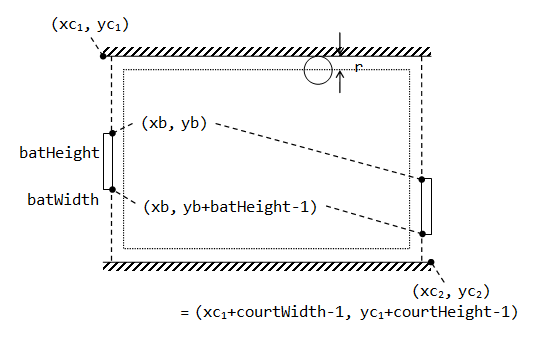

Java Game Programming
Introduction - The World Of Bouncing Balls
Let us begin by getting some balls bouncing, as an introduction to game programming.
Demos
Click the image to run the DEMO Applets:


Example 1: Getting Started with One Bouncing Ball
BouncingBallSimple.java: Writing a single ball bouncing inside a rectangular container box is straight forward, and can be accomplished with very few lines of codes, as follows:
import java.awt.*; import java.util.Formatter; import javax.swing.*; /** * One ball bouncing inside a rectangular box. * All codes in one file. Poor design! */ // Extends JPanel, so as to override the paintComponent() for custom rendering codes. public class BouncingBallSimple extends JPanel { // Container box's width and height private static final int BOX_WIDTH = 640; private static final int BOX_HEIGHT = 480; // Ball's properties private float ballRadius = 200; // Ball's radius private float ballX = ballRadius + 50; // Ball's center (x, y) private float ballY = ballRadius + 20; private float ballSpeedX = 3; // Ball's speed for x and y private float ballSpeedY = 2; private static final int UPDATE_RATE = 30; // Number of refresh per second /** Constructor to create the UI components and init game objects. */ public BouncingBallSimple() { this.setPreferredSize(new Dimension(BOX_WIDTH, BOX_HEIGHT)); // Start the ball bouncing (in its own thread) Thread gameThread = new Thread() { public void run() { while (true) { // Execute one update step // Calculate the ball's new position ballX += ballSpeedX; ballY += ballSpeedY; // Check if the ball moves over the bounds // If so, adjust the position and speed. if (ballX - ballRadius < 0) { ballSpeedX = -ballSpeedX; // Reflect along normal ballX = ballRadius; // Re-position the ball at the edge } else if (ballX + ballRadius > BOX_WIDTH) { ballSpeedX = -ballSpeedX; ballX = BOX_WIDTH - ballRadius; } // May cross both x and y bounds if (ballY - ballRadius < 0) { ballSpeedY = -ballSpeedY; ballY = ballRadius; } else if (ballY + ballRadius > BOX_HEIGHT) { ballSpeedY = -ballSpeedY; ballY = BOX_HEIGHT - ballRadius; } // Refresh the display repaint(); // Callback paintComponent() // Delay for timing control and give other threads a chance try { Thread.sleep(1000 / UPDATE_RATE); // milliseconds } catch (InterruptedException ex) { } } } }; gameThread.start(); // Callback run() } /** Custom rendering codes for drawing the JPanel */ @Override public void paintComponent(Graphics g) { super.paintComponent(g); // Paint background // Draw the box g.setColor(Color.BLACK); g.fillRect(0, 0, BOX_WIDTH, BOX_HEIGHT); // Draw the ball g.setColor(Color.BLUE); g.fillOval((int) (ballX - ballRadius), (int) (ballY - ballRadius), (int)(2 * ballRadius), (int)(2 * ballRadius)); // Display the ball's information g.setColor(Color.WHITE); g.setFont(new Font("Courier New", Font.PLAIN, 12)); StringBuilder sb = new StringBuilder(); Formatter formatter = new Formatter(sb); formatter.format("Ball @(%3.0f,%3.0f) Speed=(%2.0f,%2.0f)", ballX, ballY, ballSpeedX, ballSpeedY); g.drawString(sb.toString(), 20, 30); } /** main program (entry point) */ public static void main(String[] args) { // Run GUI in the Event Dispatcher Thread (EDT) instead of main thread. javax.swing.SwingUtilities.invokeLater(new Runnable() { public void run() { // Set up main window (using Swing's Jframe) JFrame frame = new JFrame("A Bouncing Ball"); frame.setDefaultCloseOperation(JFrame.EXIT_ON_CLOSE); frame.setContentPane(new BouncingBallSimple()); frame.pack(); frame.setVisible(true); } }); } }
Dissecting BouncingBallSimple.java:
I assume that you understand Java Graphics programming (AWT/Swing and custom painting), and the multi-threading issues involved.
- Our main class extends the
JPanel, so as to override thepaintComponent()for our custom rendering codes. - In the constructor, we setup the UI components (set the preferred size for the
JPanel). We then start a new thread to run the game update (moving the ball). - For each update step, we move the ball according to its speed and check for collision. If it exceeds the bound, we react by adjusting the ball's new position and speed. In this simple case, the ball reflects horizontally if it exceeds the x-bound, and reflects vertically if it exceeds the y-bound. We then invoke
repaint()to refresh the screen, which in turn calls thepaintComponent(). - We override
paintComponent()to perform our custom rendering. We usefillRect()to draw the rectangular container box;fillOval()to draw the round ball, anddrawString()to display a status message. - In the
main()method, we construct aJFrameas the application's main window. We set our customJPanelas the content pane for theJFrame. The UI codes are run in the Event Dispatcher Thread (EDT), viajavax.swing.SwingUtilities.invokeLater(), as recommended by Swing developers.
This program, although works, is poor in design (in terms of modularity, reusability and expansibility). Moreover, the collision detection and response algorithm is crude. There is also no timing control.
Example 2: Bouncing Ball in Object-Oriented Design
Click the image to run the DEMO. Click HERE to download the source codes for this example (unzip the downloaded JAR file).
Let us re-write the bouncing-ball program with proper Object-Oriented Design, which consists of the following classes:
The Box Class
The Box class has the following instance variables:
minX,minY,maxXandmaxY, which represent the box's bounds, with package access.
Take note that Java (and also Windows) Graphics Coordinates is inverted vertically, with origin (0, 0) at the top-left corner, as shown:
The Box class has the following public methods:
- A constructor which accept the top-left corner (
x,y),width,heightandcolor. It is safer to usex,y,widthandheight, instead ofminX,minY,maxXandmaxY, to define a rectangle. - A
set()method to set or reset its bounds. - A
draw(g)method, to draw itself with the given graphics contextg(ofjava.awt.Graphics).
import java.awt.*; /** * A rectangular container box, containing the bouncing ball. */ public class ContainerBox { int minX, maxX, minY, maxY; // Box's bounds (package access) private Color colorFilled; // Box's filled color (background) private Color colorBorder; // Box's border color private static final Color DEFAULT_COLOR_FILLED = Color.BLACK; private static final Color DEFAULT_COLOR_BORDER = Color.YELLOW; /** Constructors */ public ContainerBox(int x, int y, int width, int height, Color colorFilled, Color colorBorder) { minX = x; minY = y; maxX = x + width - 1; maxY = y + height - 1; this.colorFilled = colorFilled; this.colorBorder = colorBorder; } /** Constructor with the default color */ public ContainerBox(int x, int y, int width, int height) { this(x, y, width, height, DEFAULT_COLOR_FILLED, DEFAULT_COLOR_BORDER); } /** Set or reset the boundaries of the box. */ public void set(int x, int y, int width, int height) { minX = x; minY = y; maxX = x + width - 1; maxY = y + height - 1; } /** Draw itself using the given graphic context. */ public void draw(Graphics g) { g.setColor(colorFilled); g.fillRect(minX, minY, maxX - minX - 1, maxY - minY - 1); g.setColor(colorBorder); g.drawRect(minX, minY, maxX - minX - 1, maxY - minY - 1); } }
The Ball Class
The Ball class has the following instance variables:
x,y,radiusandcolor, which represent the ball's center (x, y) coordinates, radius and color, respectively.-
speedXandspeedY, which represent the speed in the x and y directions, measured in pixels per time-step.
Internally, all numbers are expressed in float to ensure smoothness in rendering, especially in the trigonometric operations. The numbers will be truncated to integral pixel values for display. (32-bit single-precision float is sufficient for most of the games, double is probably an overkill!)
The Ball class has the following public methods:
- A constructor that accepts
x,y,radius, velocity in the polar coordinates ofspeedandmoveAngle(because it is easier and more intuitive for user to specify velocity this way), andcolor. - A
draw(g)method to draw itself with the given graphics context. - A
toString()to describe itself, which is used in printing the ball's status. - A
moveOneStepWithCollisionDetection(Box box)which moves the ball by one step, with collision detection and response.
Below is the listing of the Ball class:
import java.awt.*; import java.util.Formatter; /** * The bouncing ball. */ public class Ball { float x, y; // Ball's center x and y (package access) float speedX, speedY; // Ball's speed per step in x and y (package access) float radius; // Ball's radius (package access) private Color color; // Ball's color private static final Color DEFAULT_COLOR = Color.BLUE; /** * Constructor: For user friendliness, user specifies velocity in speed and * moveAngle in usual Cartesian coordinates. Need to convert to speedX and * speedY in Java graphics coordinates for ease of operation. */ public Ball(float x, float y, float radius, float speed, float angleInDegree, Color color) { this.x = x; this.y = y; // Convert (speed, angle) to (x, y), with y-axis inverted this.speedX = (float)(speed * Math.cos(Math.toRadians(angleInDegree))); this.speedY = (float)(-speed * (float)Math.sin(Math.toRadians(angleInDegree))); this.radius = radius; this.color = color; } /** Constructor with the default color */ public Ball(float x, float y, float radius, float speed, float angleInDegree) { this(x, y, radius, speed, angleInDegree, DEFAULT_COLOR); } /** Draw itself using the given graphics context. */ public void draw(Graphics g) { g.setColor(color); g.fillOval((int)(x - radius), (int)(y - radius), (int)(2 * radius), (int)(2 * radius)); } /** * Make one move, check for collision and react accordingly if collision occurs. * * @param box: the container (obstacle) for this ball. */ public void moveOneStepWithCollisionDetection(ContainerBox box) { // Get the ball's bounds, offset by the radius of the ball float ballMinX = box.minX + radius; float ballMinY = box.minY + radius; float ballMaxX = box.maxX - radius; float ballMaxY = box.maxY - radius; // Calculate the ball's new position x += speedX; y += speedY; // Check if the ball moves over the bounds. If so, adjust the position and speed. if (x < ballMinX) { speedX = -speedX; // Reflect along normal x = ballMinX; // Re-position the ball at the edge } else if (x > ballMaxX) { speedX = -speedX; x = ballMaxX; } // May cross both x and y bounds if (y < ballMinY) { speedY = -speedY; y = ballMinY; } else if (y > ballMaxY) { speedY = -speedY; y = ballMaxY; } } /** Return the magnitude of speed. */ public float getSpeed() { return (float)Math.sqrt(speedX * speedX + speedY * speedY); } /** Return the direction of movement in degrees (counter-clockwise). */ public float getMoveAngle() { return (float)Math.toDegrees(Math.atan2(-speedY, speedX)); } /** Return mass */ public float getMass() { return radius * radius * radius / 1000f; // Normalize by a factor } /** Return the kinetic energy (0.5mv^2) */ public float getKineticEnergy() { return 0.5f * getMass() * (speedX * speedX + speedY * speedY); } /** Describe itself. */ public String toString() { sb.delete(0, sb.length()); formatter.format("@(%3.0f,%3.0f) r=%3.0f V=(%2.0f,%2.0f) " + "S=%4.1f \u0398=%4.0f KE=%3.0f", x, y, radius, speedX, speedY, getSpeed(), getMoveAngle(), getKineticEnergy()); // \u0398 is theta return sb.toString(); } // Re-use to build the formatted string for toString() private StringBuilder sb = new StringBuilder(); private Formatter formatter = new Formatter(sb); }
The Control Logic and Main Display Class BallWorld
The BallWorld class provides the Control Logic (C) (gameStart(), gameUpdate()), as well as the Presentation View (V) by extending the JPanel.
import java.awt.*; import java.awt.event.*; import java.util.Random; import javax.swing.*; /** * The control logic and main display panel for game. */ public class BallWorld extends JPanel { private static final int UPDATE_RATE = 30; // Frames per second (fps) private Ball ball; // A single bouncing Ball's instance private ContainerBox box; // The container rectangular box private DrawCanvas canvas; // Custom canvas for drawing the box/ball private int canvasWidth; private int canvasHeight; /** * Constructor to create the UI components and init the game objects. * Set the drawing canvas to fill the screen (given its width and height). * * @param width : screen width * @param height : screen height */ public BallWorld(int width, int height) { canvasWidth = width; canvasHeight = height; // Init the ball at a random location (inside the box) and moveAngle Random rand = new Random(); int radius = 200; int x = rand.nextInt(canvasWidth - radius * 2 - 20) + radius + 10; int y = rand.nextInt(canvasHeight - radius * 2 - 20) + radius + 10; int speed = 5; int angleInDegree = rand.nextInt(360); ball = new Ball(x, y, radius, speed, angleInDegree, Color.BLUE); // Init the Container Box to fill the screen box = new ContainerBox(0, 0, canvasWidth, canvasHeight, Color.BLACK, Color.WHITE); // Init the custom drawing panel for drawing the game canvas = new DrawCanvas(); this.setLayout(new BorderLayout()); this.add(canvas, BorderLayout.CENTER); // Handling window resize. this.addComponentListener(new ComponentAdapter() { @Override public void componentResized(ComponentEvent e) { Component c = (Component)e.getSource(); Dimension dim = c.getSize(); canvasWidth = dim.width; canvasHeight = dim.height; // Adjust the bounds of the container to fill the window box.set(0, 0, canvasWidth, canvasHeight); } }); // Start the ball bouncing gameStart(); } /** Start the ball bouncing. */ public void gameStart() { // Run the game logic in its own thread. Thread gameThread = new Thread() { public void run() { while (true) { // Execute one time-step for the game gameUpdate(); // Refresh the display repaint(); // Delay and give other thread a chance try { Thread.sleep(1000 / UPDATE_RATE); } catch (InterruptedException ex) {} } } }; gameThread.start(); // Invoke GaemThread.run() } /** * One game time-step. * Update the game objects, with proper collision detection and response. */ public void gameUpdate() { ball.moveOneStepWithCollisionDetection(box); } /** The custom drawing panel for the bouncing ball (inner class). */ class DrawCanvas extends JPanel { /** Custom drawing codes */ @Override public void paintComponent(Graphics g) { super.paintComponent(g); // Paint background // Draw the box and the ball box.draw(g); ball.draw(g); // Display ball's information g.setColor(Color.WHITE); g.setFont(new Font("Courier New", Font.PLAIN, 12)); g.drawString("Ball " + ball.toString(), 20, 30); } /** Called back to get the preferred size of the component. */ @Override public Dimension getPreferredSize() { return (new Dimension(canvasWidth, canvasHeight)); } } }
The class BallWorld extends JPanel, as the master view panel. The master panel may contain many sub-panels. In this example, it contains only a custom drawing panel. I shall include a control panel in the later exercises.
The BallWorld also contains the control logic: gameStart(), gameUpdate().
It has three instance variables: a Ball, a Box, and a DrawCanvas (for drawing the bouncing ball).
The constructor sets up the UI components, game objects, and starts the ball bouncing by invoking gameStart(). It accepts two argument, width and height, which is used to set the dimension of the the drawing canvas, via callback method getPreferredSize() in the DrawCanvas. I also included the codes for handling window resize in componentResized() callback handler, which shall resize the box to fill the window.
Custom drawing is carried out in a DrawCanvas, which is derived from JPanel, by overriding the paintComponent(Graphics) method to program custom rendering. paintComponent() is not supposed to be called directly, but called-back via repaint(). DrawCanvas is designed to be an inner class of the main class, so as to access the private variables of outer class - in particular, the game objects.
The gameStart() start the game loop in a separate thread. The game loop repetitively (a) detect collision in the coming time-step and compute the proper responses, (a) synchronously update the position and state of all the game objects, (c) render graphics and refresh the display, (d) delay to control the refresh timing and yield control to other threads.

The game loop is running in its own thread (GameThread), by sub-classing Thread and overriding the run() method to program the running behavior. Multithread is necessary for game programming, as the graphics subsystem uses a so-called Event Dispatch Thread (EDT) to monitor the input events (such as key-press, mouse-click), run the event handlers, and refreshes the display. If the Event Dispatch Thread is starved (e.g., the GameThread does not yield control), the screen freezes and no inputs can be processed, resulted in the infamous unresponsive user-interface problem.
Method run() is not supposed to be called directly, but called-back via the Thread's method start(). The static method Thread.sleep() suspends this game thread by the specified milliseconds. The sleep() serves two purposes: It provides the necessary delay to achieve the target update (or refresh) rate, and also yields control to other threads to do their assigned tasks, in particular, the GUI Event Dispatch Thread which refreshes the screen and processes the inputs.
The game loop, in this case, is straight-forward. For each step, it moves the ball and checks if collision occurs. If so, it computes the proper response. It refreshes the display by invoking repaint(), which calls-back paintComponent() of the DrawCanvas to carry out the custom drawing.
The Main class
import javax.swing.JFrame; /** * Main Program for running the bouncing ball as a standalone application. */ public class Main { // Entry main program public static void main(String[] args) { // Run UI in the Event Dispatcher Thread (EDT), instead of Main thread javax.swing.SwingUtilities.invokeLater(new Runnable() { public void run() { JFrame frame = new JFrame("A World of Balls"); frame.setDefaultCloseOperation(JFrame.EXIT_ON_CLOSE); frame.setContentPane(new BallWorld(640, 480)); // BallWorld is a JPanel frame.pack(); // Preferred size of BallWorld frame.setVisible(true); // Show it } }); } }
The Main class provides the main() method to start the application, which allocates and sets up a JFrame. An instance of BallWorld is constructed and set as the content pane for the JFrame.
The main() uses the standard procedure to construct the UI in the Event Dispatch Thread to ensure thread-safety (see Java Swing online tutorial @ http://java.sun.com/docs/books/tutorial/uiswing).
For this example, you could include the main() method in the BallWorld class, and discard the Main class.
Try running the program and resizing the window.
Running as an Applet
Instead of the Main class, we could use a MainApplet class to run this program as an Java applet.
import javax.swing.JApplet; /** * Main Program to run as an applet * The display area is 640x480. */ public class MainApplet extends JApplet { @Override public void init() { // Run UI in the Event Dispatcher Thread javax.swing.SwingUtilities.invokeLater(new Runnable() { public void run() { setContentPane(new BallWorld(640, 480)); // BallWorld is a JPanel } }); } }
Applet extends from JApplet (or Applet), and uses init() instead of main() to begin operation.
Distribute Application/Applet in a JAR file
Our program contains many classes. How to distribute these classes? The answer is via a single JAR file. JAR is similar to ZIP, which compresses the contents (you can use WinZip or WinRAR to unzip a JAR file). Furthermore, JRE can run directly from a JAR file, without explicitly decompress it.
We shall prepare a JAR file such that we can run our program as a standalone application (via Main.class) as well as an applet (via MainApplet.class).
Distribute Stand-alone Application in a JAR file: To run a standalone program from a jar file, we need to prepare a so-called manifest (says "BallWorld.manifest") to specify the application's main class, as follows (On the other hand, applet's main class is specified in the attribute "code" of the <applet> tag, no manifest needed for applet):
Manifest-Version: 1.0 Main-Class: Main
Run the JDK's jar utility from a cmd shell to jar-up all the classes as follow (the command-line options are: 'c' for create, 'v' for verbose, 'm' for manifest, 'f' for jar's filename):
... change the current working directory to the application's base directory ...
> jar cvmf BallWorld.manifest ballworld.jar *.class
In Eclipse, right-click the project ⇒ Export... ⇒ Java ⇒ JAR file ⇒ Next ⇒ Check "Export generated class files and resources" (you may also export the source files) ⇒ Next ⇒ Next ⇒ Check "Generate the manifest file" ⇒ In "Main class", enter your main class ⇒ Finish.
You can use the Java runtime with "-jar" option to run the standalone application from the JAR file (as follow) or simply double-click the JAR file. The embedded manifest specifies the main class to start the application.
> java -jar ballworld.jar
If your program (in the JAR file) requires other JAR files, include a "Class-Path" in the manifest as follows. The JAR files are separated by space(?!). There is no need to include the current directory(?!).
Manifest-Version: 1.0 Main-Class: Main Class-Path: collisionphysics.jar another.jar
Distribute Applet in a JAR file: To run an applet from a JAR file, provide an HTML script with attribute "archive" selecting the JAR file and attribute "code" selecting the applet class:
<html>
<head><title>A Bouncing Ball</title></head>
<body>
<h2>A Bouncing Ball</h2>
<applet code="MainApplet.class"
width="640" height="480"
archive="ballworld.jar">
</applet>
</body>
</html>
You may include additional JAR files in the archive attribute. The jar files are separated by commas.
Summary: For a standalone application, the main class is specified in the manifest; for an applet, the main class is specified in the <applet>'s code attribute, no manifest needed. For an application, additional JAR files are specified in the manifest; for an applet, they are added in the <applet>'s archive attribute.
Running in Full-Screen Mode
import java.awt.*; import java.awt.event.*; import javax.swing.*; /** * Main Program for running the bouncing ball as a standalone application, * in Full-Screen mode (if full-screen mode is supported). * Use ESC Key to quit (need to handle key event). */ public class MainFullScreenOnly extends JFrame { /** Constructor to initialize UI */ public MainFullScreenOnly() { // Get the default graphic device and try full screen mode GraphicsDevice device = GraphicsEnvironment.getLocalGraphicsEnvironment() .getDefaultScreenDevice(); if (device.isFullScreenSupported()) { // Go for full-screen mode this.setUndecorated(true); // Don't show title and border this.setResizable(false); //this.setIgnoreRepaint(true); // Ignore OS re-paint request device.setFullScreenWindow(this); } else { // Run in windowed mode if full screen is not supported Dimension dim = Toolkit.getDefaultToolkit().getScreenSize();
this.setSize(dim.width, dim.height - 40); // minus task bar
this.setResizable(true);
} // Allocate the game panel to fill the current screen BallWorld ballWorld = new BallWorld(this.getWidth(), this.getHeight()); this.setContentPane(ballWorld); // Set as content pane for this JFrame // To handle key events this.addKeyListener(new KeyAdapter() { @Override public void keyPressed(KeyEvent e) { int keyCode = e.getKeyCode(); switch (keyCode) { case KeyEvent.VK_ESCAPE: // ESC to quit System.exit(0); break; } } }); this.setFocusable(true); // To receive key event this.setDefaultCloseOperation(JFrame.EXIT_ON_CLOSE); this.setTitle("A World of Balls"); this.pack(); // Pack to preferred size this.setVisible(true); // Show it } /** Entry main program */ public static void main(String[] args) { // Run UI in the Event Dispatcher Thread (EDT), instead of Main thread javax.swing.SwingUtilities.invokeLater(new Runnable() { public void run() { new MainFullScreenOnly(); } }); } }
The above main program runs the bouncing ball in full-screen mode, if full-screen mode is supported. It first queries GraphicsDevice.isFullScreenSupported(), and switches into full-screen mode via GraphicsDevice.setFullScreenWindow(this).
If full-screen mode is not available, the program runs in windowed mode, using the maximum window size. We use Toolkit.getDefaultToolkit().getScreenSize() to find the current screen size.
I also set up the key-event handler, so that we could use ESC key to quit the program in full-screen mode.
Example 3: Collision Detection and Response
Click HERE to download the source codes for this example (unzip the downloaded JAR file).
Let's take a closer look at collision detection and response for our single bouncing ball. In our special case, the bounds are either horizontal or vertical.
The ball collides with the container if it touches or moves over its bounds, in the up-coming time-step.
Detecting collision of a moving circle with a vertical line or a horizontal line is simple (a very special case!) as illustrated below. Computing the response for this special case is also trivial - simply reflect the ball either horizontally or vertically. If collision occurs, we need to position the ball at the point of impact. Do not cross the bound, which may result in a deadlock where the ball sticks to the wall or simply flies away in the next step.

As illustrated, the radius of the ball effectively reduces the boundaries of the box by that amount, or shorten the collision time. Hence, by moving the boundaries of the box, we can simplify the ball to a point. This simplification is important in a complex situation.
Package collisionphysics: In order to handle collision detection and response for many situations, I created a package called collisionphysics, which includes static methods for detecting collision and computing responses.
CollisionResponse.java: If collision occurs, the collision time and responses (newSpeedX, newSpeedY) are kept in an object of CollisionResponse. My collision detection algorithms are based on ray tracing and uses parametric equation to find the earliest positive collision time.
package collisionphysics; /** * If collision occurs, this object stores the collision time and * the computed responses, new speed (newSpeedX, newSpeedY). */ public class CollisionResponse { /** Detected collision time, reset to Float.MAX_VALUE */ public float t; // Time threshold to be subtracted from collision time // to prevent moving over the bound. Assume that t <= 1. private static final float T_EPSILON = 0.005f; /** Computed speed in x-direction after collision */ public float newSpeedX; /** Computed speed in y-direction after collision */ public float newSpeedY; /** Constructor which resets the collision time to infinity. */ public CollisionResponse() { reset(); // Reset detected collision time to infinity } /** Reset the detected collision time to infinity. */ public void reset() { this.t = Float.MAX_VALUE; } /** Copy this instance to another, used to find the earliest collision. */ public void copy(CollisionResponse another) { this.t = another.t; this.newSpeedX = another.newSpeedX; this.newSpeedY = another.newSpeedY; } /** Return the x-position after impact. */ public float getNewX(float currentX, float speedX) { // Subtract by a small thread to make sure that it does not cross the bound. if (t > T_EPSILON) { return (float)(currentX + speedX * (t - T_EPSILON)); } else { return currentX; } } /** Return the y-position after impact. */ public float getNewY(float currentY, float speedY) { // Subtract by a small thread to make sure that it does not cross the bound. if (t > T_EPSILON) { return (float)(currentY + speedY * (t - T_EPSILON)); } else { return currentY; } } }
The method reset() sets the collision time to positive infinity (Float.MAX_VALUE).
In a complex systems (e.g., multiple balls), we need to look for the earliest collision in the entire system. The copy() method can be used to transfer the current response to the earliest response, if it has a smaller time.
CollisionPhsyics.java: The main class (modeled after java.lang.Math), which provides static methods for collision detection and response.
package collisionphysics;
public class CollisionPhysics {
// Working copy for computing response in intersect(ContainerBox box),
// to avoid repeatedly allocating objects.
private static CollisionResponse tempResponse = new CollisionResponse();
/**
* Detect collision for a moving point bouncing inside a rectangular container,
* within the given timeLimit.
* If collision is detected within the timeLimit, compute collision time and
* response in the given CollisionResponse object. Otherwise, set collision time
* to infinity.
* The result is passed back in the given CollisionResponse object.
*/
public static void pointIntersectsRectangleOuter(
float pointX, float pointY, float speedX, float speedY, float radius,
float rectX1, float rectY1, float rectX2, float rectY2,
float timeLimit, CollisionResponse response) {
response.reset(); // Reset detected collision time to infinity
// A outer rectangular container box has 4 borders.
// Need to look for the earliest collision, if any.
// Right border
pointIntersectsLineVertical(pointX, pointY, speedX, speedY, radius,
rectX2, timeLimit, tempResponse);
if (tempResponse.t < response.t) {
response.copy(tempResponse); // Copy into resultant response
}
// Left border
pointIntersectsLineVertical(pointX, pointY, speedX, speedY, radius,
rectX1, timeLimit, tempResponse);
if (tempResponse.t < response.t) {
response.copy(tempResponse);
}
// Top border
pointIntersectsLineHorizontal(pointX, pointY, speedX, speedY, radius,
rectY1, timeLimit, tempResponse);
if (tempResponse.t < response.t) {
response.copy(tempResponse);
}
// Bottom border
pointIntersectsLineHorizontal(pointX, pointY, speedX, speedY, radius,
rectY2, timeLimit, tempResponse);
if (tempResponse.t < response.t) {
response.copy(tempResponse);
}
}
/**
* Detect collision for a moving point hitting a horizontal line,
* within the given timeLimit.
*/
public static void pointIntersectsLineVertical(
float pointX, float pointY, float speedX, float speedY, float radius,
float lineX, float timeLimit, CollisionResponse response) {
response.reset(); // Reset detected collision time to infinity
// No collision possible if speedX is zero
if (speedX == 0) {
return;
}
// Compute the distance to the line, offset by radius.
float distance;
if (lineX > pointX) {
distance = lineX - pointX - radius;
} else {
distance = lineX - pointX + radius;
}
float t = distance / speedX; // speedX != 0
// Accept 0 < t <= timeLimit
if (t > 0 && t <= timeLimit) {
response.t = t;
response.newSpeedX = -speedX; // Reflect horizontally
response.newSpeedY = speedY; // No change vertically
}
}
/**
* @see movingPointIntersectsLineVertical().
*/
public static void pointIntersectsLineHorizontal(
float pointX, float pointY, float speedX, float speedY, float radius,
float lineY, float timeLimit, CollisionResponse response) {
response.reset(); // Reset detected collision time to infinity
// No collision possible if speedY is zero
if (speedY == 0) {
return;
}
// Compute the distance to the line, offset by radius.
float distance;
if (lineY > pointY) {
distance = lineY - pointY - radius;
} else {
distance = lineY - pointY + radius;
}
float t = distance / speedY; // speedY != 0
// Accept 0 < t <= timeLimit
if (t > 0 && t <= timeLimit) {
response.t = t;
response.newSpeedY = -speedY; // Reflect vertically
response.newSpeedX = speedX; // No change horizontally
}
}
}
The pointIntersectsLineXxx() methods take a moving ball (currentX, currentY, speedX, speedY, radius), a vertical/horizontal line (lineX|lineY), a time limit (timeLimit), and a CollisionResponse object. If a collision is detected within the given time limit, it computes the collision time and responses (newSpeedX, newSpeedY) and stores them back to the given CollisionResponse object.
The pointIntersectsRectangleOuter() uses the above methods to detect the earliest collision to the 4 borders of the container box. Only the first collision matters, which nullifies all the subsequent detected collisions. It positions the ball accurately after the collision at the point of impact.
Ball.java: We shall prepare for the multiple-ball case, where only the earliest collision matters. Each ball shall detect probable collision to all the other objects in the system. It shall maintain information about its earlier collision detected.
......
public class Ball {
......
// For collision detection and response
// Maintain the response of the earliest collision detected
// by this ball instance. (package access)
CollisionResponse earliestCollisionResponse = new CollisionResponse();
......
// Working copy for computing response in intersect(ContainerBox box),
// to avoid repeatedly allocating objects.
private CollisionResponse tempResponse = new CollisionResponse();
/**
* Check if this ball collides with the container box in the coming time-step.
*
* @param box: container (obstacle) for this ball
*/
public void intersect(ContainerBox box) {
// Call movingPointIntersectsRectangleOuter, which returns the
// earliest collision to one of the 4 borders, if collision detected.
CollisionPhysics.pointIntersectsRectangleOuter(
this.x, this.y, this.speedX, this.speedY, this.radius,
box.minX, box.minY, box.maxX, box.maxY,
1.0f, tempResponse);
if (tempResponse.t < earliestCollisionResponse.t) {
earliestCollisionResponse.copy(tempResponse);
}
}
/**
* Update the states of this ball for one time-step.
* Move for one time-step if no collision occurs; otherwise move up to
* the earliest detected collision.
*/
public void update() {
// Check the earliest collision detected for this ball stored in
// earliestCollisionResponse.
if (earliestCollisionResponse.t <= 1.0f) { // Collision detected
// This ball collided, get the new position and speed
this.x = earliestCollisionResponse.getNewX(this.x, this.speedX);
this.y = earliestCollisionResponse.getNewY(this.y, this.speedY);
this.speedX = (float)earliestCollisionResponse.newSpeedX;
this.speedY = (float)earliestCollisionResponse.newSpeedY;
} else { // No collision in this coming time-step
// Make a complete move
this.x += this.speedX;
this.y += this.speedY;
}
// Clear for the next collision detection
earliestCollisionResponse.reset();
}
}
BallWorld.java:
......
public class BallWorld extends JPanel {
......
public void gameUpdate() {
// Detect collision for this ball with the container box.
ball.intersect(box);
// Update the ball's state with proper collision response if collided.
ball.update();
}
}
Run this example and compare with previous example. Closely observe the collision by reducing the refresh rate and increase the ball's speed.
Example 4: Timing Control
Click HERE to download the source codes (Unzip the downloaded JAR file).
So far, we have ignored the timing control. In many computer games, we define a so-called time-step, which is closely related to the screen refresh rate, to synchronously update all the game objects before refresh the display.
For our bouncing ball, it probably hits the box in between the time-step, and need to continuously move in the new direction for the remaining of the time-step for accurate timing control. Collisions may again occur in the remaining of the time-step.
Normalize each time-step to 1, we need to compute the fraction of times (t) taken up to the first collision, and let the ball continues its journey for the remaining time fraction 1-t.
In a complex situation (e.g., multiple moving balls), it is important to detect the "earliest" collision among all the moving objects, and move all the objects up to this collision time, and repeat the process until the time-step is over. Take note that only the first collision matters!
Ball.java:
......
public class Ball {
......
// For collision detection and response
// Maintain the response of the earliest collision detected
// by this ball instance. Only the first collision matters!
CollisionResponse earliestCollisionResponse = new CollisionResponse();
......
// Working copy for computing response in intersect(box, timeLimit),
// to avoid repeatedly allocating objects.
private CollisionResponse tempResponse = new CollisionResponse();
/**
* Check if this ball collides with the container box in the interval
* (0, timeLimit].
*/
public boolean intersect(ContainerBox box, float timeLimit) {
// Call movingPointIntersectsRectangleOuter, which returns the
// earliest collision to one of the 4 borders, if collision detected.
CollisionPhysics.pointIntersectsRectangleOuter(x, y, speedX, speedY, radius,
box.minX, box.minY, box.maxX, box.maxY, timeLimit, tempResponse);
if (tempResponse.t < earliestCollisionResponse.t) {
earliestCollisionResponse.copy(tempResponse);
}
}
public void update(float time) {
// Check if this ball is responsible for the first collision?
if (earliestCollisionResponse.t <= time) {
// This ball collided, get the new position and speed
this.x = earliestCollisionResponse.getNewX(this.x, this.speedX);
this.y = earliestCollisionResponse.getNewY(this.y, this.speedY);
this.speedX = (float)earliestCollisionResponse.newSpeedX;
this.speedY = (float)earliestCollisionResponse.newSpeedY;
} else {
// This ball does not involve in a collision. Move straight.
this.x += this.speedX * time;
this.y += this.speedY * time;
}
// Clear for the next collision detection
earliestCollisionResponse.reset();
}
}
BallWorld.java: Modify the gameUpdate() method in the class BallWorld to make use of the intersect() to consume one full time-step of movement, even after possibly multiple collisions. Also modify the game loop to control one time-step precisely.
......
public class BallWorld extends JPanel {
private static final float EPSILON_TIME = 1e-2f; // Threshold for zero time
......
public void gameStart() {
// Run the game logic in its own thread.
Thread gameThread = new Thread() {
public void run() {
while (true) {
long beginTimeMillis, timeTakenMillis, timeLeftMillis;
beginTimeMillis = System.currentTimeMillis();
// Execute one game step
gameUpdate();
// Refresh the display
repaint();
// Provide the necessary delay to meet the target rate
timeTakenMillis = System.currentTimeMillis() - beginTimeMillis;
timeLeftMillis = 1000L / UPDATE_RATE - timeTakenMillis;
if (timeLeftMillis < 5) timeLeftMillis = 5; // Set a minimum
// Delay and give other thread a chance
try {
Thread.sleep(timeLeftMillis);
} catch (InterruptedException ex) {}
}
}
};
gameThread.start(); // Invoke GaemThread.run()
}
/**
* One game time-step.
* Update the game objects, with proper collision detection and response.
*/
public void gameUpdate() {
float timeLeft = 1.0f; // One time-step to begin with
// Repeat until the one time-step is up
do {
// Need to find the earliest collision time among all objects
float earliestCollisionTime = timeLeft;
// Special case here as there is only one moving ball.
ball.intersect(box, timeLeft);
if (ball.earliestCollisionResponse.t < earliestCollisionTime) {
earliestCollisionTime = ball.earliestCollisionResponse.t;
}
// Update all the objects for earliestCollisionTime
ball.update(earliestCollisionTime);
// Testing Only - Show collision position
if (earliestCollisionTime > 0.05) { // Do not display small changes
repaint();
try {
Thread.sleep((long)(1000L / UPDATE_RATE * earliestCollisionTime));
} catch (InterruptedException ex) {}
}
timeLeft -= earliestCollisionTime; // Subtract the time consumed and repeat
} while (timeLeft > EPSILON_TIME); // Ignore remaining time less than threshold
}
}
Again, compare the output of example 2, 3, and 4. Closely observe the collisions by reducing the refresh rate and increase the ball's speed.
Example 5: Control Panel
Let us add a control panel, with a "pause" checkbox, a "speed" slider and a "radius" slider.
Click the image to run the DEMO. Click HERE to download the source codes for this example (unzip the downloaded JAR file).
Modify the BallWorld class to include a ControlPanel inner class, which maintains the control UI components (checkbox, slider, button):
public class BallWorld extends JPanel {
......
......
private ControlPanel control; // The control panel of buttons and sliders.
/** Constructor to create the UI components and init the game objects. */
public BallWorld() {
.......
// Control panel
control = new ControlPanel();
// Layout the drawing panel and control panel
this.setLayout(new BorderLayout());
this.add(canvas, BorderLayout.CENTER);
this.add(control, BorderLayout.SOUTH);
// Start the ball bouncing
gameStart();
}
......
......
/** The control panel (inner class). */
class ControlPanel extends JPanel {
/** Constructor to initialize UI components of the controls */
public ControlPanel() {
// A checkbox to toggle pause/resume movement
JCheckBox pauseControl = new JCheckBox();
this.add(new JLabel("Pause"));
this.add(pauseControl);
pauseControl.addItemListener(new ItemListener() {
@Override
public void itemStateChanged(ItemEvent e) {
paused = !paused; // Toggle pause/resume flag
}
});
// A slider for adjusting the speed of the ball
int minSpeed = 2;
int maxSpeed = 20;
JSlider speedControl = new JSlider(JSlider.HORIZONTAL, minSpeed, maxSpeed,
(int)ball.getSpeed());
this.add(new JLabel("Speed"));
this.add(speedControl);
speedControl.addChangeListener(new ChangeListener() {
@Override
public void stateChanged(ChangeEvent e) {
JSlider source = (JSlider)e.getSource();
if (!source.getValueIsAdjusting()) {
int newSpeed = (int)source.getValue();
int currentSpeed = (int)ball.getSpeed();
ball.speedX *= (float)newSpeed / currentSpeed ;
ball.speedY *= (float)newSpeed / currentSpeed;
}
}
});
// A slider for adjusting the radius of the ball
int minRadius = 10;
int maxRadius = ((canvasHeight > canvasWidth) ? canvasWidth: canvasHeight) / 2 - 8;
radiusControl = new JSlider(JSlider.HORIZONTAL, minRadius,
maxRadius, (int)ball.radius);
this.add(new JLabel("Ball Radius"));
this.add(radiusControl);
radiusControl.addChangeListener(new ChangeListener() {
@Override
public void stateChanged(ChangeEvent e) {
JSlider source = (JSlider)e.getSource();
if (!source.getValueIsAdjusting()) {
float newRadius = source.getValue();
ball.radius = newRadius;
// Reposition the ball such as it is inside the box
if (ball.x - ball.radius < box.minX) {
ball.x = ball.radius + 1;
} else if (ball.x + ball.radius > box.maxX) {
ball.x = box.maxX - ball.radius - 1;
}
if (ball.y - ball.radius < box.minY) {
ball.y = ball.radius + 1;
} else if (ball.y + ball.radius > box.maxY) {
ball.y = box.maxY - ball.radius - 1;
}
}
}
});
}
}
}
Modify the gameThread of BallWorld class to program to support pause/resume operation:
public class BallWorld {
......
......
public void gameStart() {
Thread gameThread = new Thread() {
public void run() {
while (true) {
long beginTimeMillis, timeTakenMillis, timeLeftMillis;
beginTimeMillis = System.currentTimeMillis();
if (!paused) {
// Execute one game step
gameUpdate();
// Refresh the display
repaint();
}
......
......
}
Example 6: Many Balls of Different Sizes
Let us now consider the case of many balls of different sizes. Click the image to run the DEMO. Click HERE to download the source codes for this example (unzip the downloaded JAR file) and CollisonPhysiscs package.
Collision Detection
Collision occurs if the distance between the two balls is equal to the sum of their radiuses.

Collision Response
We first dissolve the velocities (V1 and V2) along the axes of collision, p and q (as illustrated). We then apply the laws of conservation of momentum and energy to compute the velocities after collision, along the axis of collision p. The velocities perpendicular to the axis of collision q remains unchanged.
Laws of Conservation of Momentum & Energy
To compute the two velocities after collision (v3 and v4), two formulas are required. The two formulas can be found from the law of conservation of momentum (along the collision axis), and the law of conservation of kinetic energy (in scalar quantities). We make the following assumptions:
- Energy losses (due to friction) are ignored.
- The balls are rigid body.
- The balls have the same density. Hence, their mass are proportional to their volume (
= 4/3 πr^3).
Collision Detection and Response for Two Moving Balls: In CollisionPhysics, method movingPointIntersectsMovingPoint() and its helper methods movingPointIntersectsMovingPointDetection() and movingPointIntersectsMovingPointResponse().
Ball.java: A method called intersect(Ball another, float timeLimit) is added to detect collision between two balls (this and the given another), and compute the proper response if collision is detected.
public class Ball {
......
......
// Working copy for computing response in intersect(Ball, timeLimit),
// to avoid repeatedly allocating objects.
private CollisionResponse thisResponse = new CollisionResponse();
private CollisionResponse anotherResponse = new CollisionResponse();
/**
* Check if this ball collides with the given another ball in the interval
* (0, timeLimit].
*/
public void intersect(Ball another, float timeLimit) {
// Call movingPointIntersectsMovingPoint() with timeLimit.
// Use thisResponse and anotherResponse, as the working copies, to store the
// responses of this ball and another ball, respectively.
// Check if this collision is the earliest collision, and update the ball's
// earliestCollisionResponse accordingly.
CollisionPhysics.pointIntersectsMovingPoint(
this.x, this.y, this.speedX, this.speedY, this.radius,
another.x, another.y, another.speedX, another.speedY, another.radius,
timeLimit, thisResponse, anotherResponse);
if (anotherResponse.t < another.earliestCollisionResponse.t) {
another.earliestCollisionResponse.copy(anotherResponse);
}
if (thisResponse.t < this.earliestCollisionResponse.t) {
this.earliestCollisionResponse.copy(thisResponse);
}
}
}
BallWorld.java: The gameUpdate() method is modified to detect collision between any pair of balls and collision between the ball the the container box. The controls are also modified. A new button is added to launch new balls.
public class BallWorld extends JPanel {
......
......
// Balls
private static final int MAX_BALLS = 25; // Max number allowed
private int currentNumBalls; // Number currently active
private Ball[] balls = new Ball[MAX_BALLS];
/** Constructor to create the UI components and init the game objects. */
public BallWorld() {
......
......
currentNumBalls = 11;
balls[0] = new Ball(100, 410, 25, 3, 34, Color.YELLOW);
balls[1] = new Ball(80, 350, 25, 2, -114, Color.YELLOW);
balls[2] = new Ball(530, 400, 30, 3, 14, Color.GREEN);
balls[3] = new Ball(400, 400, 30, 3, 14, Color.GREEN);
balls[4] = new Ball(400, 50, 35, 1, -47, Color.PINK);
balls[5] = new Ball(480, 320, 35, 4, 47, Color.PINK);
balls[6] = new Ball(80, 150, 40, 1, -114, Color.ORANGE);
balls[7] = new Ball(100, 240, 40, 2, 60, Color.ORANGE);
balls[8] = new Ball(250, 400, 50, 3, -42, Color.BLUE);
balls[9] = new Ball(200, 80, 70, 6, -84, Color.CYAN);
balls[10] = new Ball(500, 170, 90, 6, -42, Color.MAGENTA);
// The rest of the balls, that can be launched using the launch button
for (int i = currentNumBalls; i < MAX_BALLS; ++i) {
balls[i] = new Ball(20, CANVAS_HEIGHT - 20, 15, 5, 45, Color.RED);
}
......
}
/** Update the game objects, detect collision and provide response. */
public void gameUpdate() {
float timeLeft = 1.0f; // One time-step to begin with
// Repeat until the one time-step is up
do {
// Find the earliest collision up to timeLeft among all objects
float tMin = timeLeft;
// Check collision between two balls
for (int i = 0; i < currentNumBalls; ++i) {
for (int j = 0; j < currentNumBalls; ++j) {
if (i < j) {
balls[i].intersect(balls[j], tMin);
if (balls[i].earliestCollisionResponse.t < tMin) {
tMin = balls[i].earliestCollisionResponse.t;
}
}
}
}
// Check collision between the balls and the box
for (int i = 0; i < currentNumBalls; ++i) {
balls[i].intersect(box, tMin);
if (balls[i].earliestCollisionResponse.t < tMin) {
tMin = balls[i].earliestCollisionResponse.t;
}
}
// Update all the balls up to the detected earliest collision time tMin,
// or timeLeft if there is no collision.
for (int i = 0; i < currentNumBalls; ++i) {
balls[i].update(tMin);
}
timeLeft -= tMin; // Subtract the time consumed and repeat
} while (timeLeft > EPSILON_TIME); // Ignore remaining time less than threshold
}
......
......
/** The control panel (inner class). */
class ControlPanel extends JPanel {
/** Constructor to initialize UI components */
public ControlPanel() {
// A checkbox to toggle pause/resume all the balls' movement
JCheckBox pauseControl = new JCheckBox();
this.add(new JLabel("Pause"));
this.add(pauseControl);
pauseControl.addItemListener(new ItemListener() {
@Override
public void itemStateChanged(ItemEvent e) {
paused = !paused; // Toggle pause/resume flag
}
});
// A slider for adjusting the speed of all the balls by a factor
final float[] ballSavedSpeedXs = new float[MAX_BALLS];
final float[] ballSavedSpeedYs = new float[MAX_BALLS];
for (int i = 0; i < currentNumBalls; ++i) {
ballSavedSpeedXs[i] = balls[i].speedX;
ballSavedSpeedYs[i] = balls[i].speedY;
}
int minFactor = 5; // percent
int maxFactor = 200; // percent
JSlider speedControl = new JSlider(JSlider.HORIZONTAL, minFactor, maxFactor, 100);
this.add(new JLabel("Speed"));
this.add(speedControl);
speedControl.addChangeListener(new ChangeListener() {
@Override
public void stateChanged(ChangeEvent e) {
JSlider source = (JSlider)e.getSource();
if (!source.getValueIsAdjusting()) {
int percentage = (int)source.getValue();
for (int i = 0; i < currentNumBalls; ++i) {
balls[i].speedX = ballSavedSpeedXs[i] * percentage / 100.0f;
balls[i].speedY = ballSavedSpeedYs[i] * percentage / 100.0f;
}
}
}
});
// A button for launching the remaining balls
final JButton launchControl = new JButton("Launch New Ball");
this.add(launchControl);
launchControl.addActionListener(new ActionListener() {
@Override
public void actionPerformed(ActionEvent e) {
if (currentNumBalls < MAX_BALLS) {
++currentNumBalls;
if (currentNumBalls == MAX_BALLS) {
// Disable the button, as there is no more ball
launchControl.setEnabled(false);
}
}
}
});
}
}
}
Example 6a: Circular Container
Click the image to run the DEMO. Click HERE to download the source codes for this example (unzip the downloaded JAR file) and CollisonPhysiscs package.
Collision Detection and Response
Example 7: More Shapes and Obstacles
Click the image to run the DEMO. Click HERE to download the source codes for this example (unzip the downloaded JAR file) and CollisonPhysiscs package.
Collision - A Moving Ball hitting a Line Segment

Collision - A Moving Ball hitting an End-Point of a Line Segment
[PENDING] Some Explanation?
A Pong Game
[PENDING]
Brick, Billiards, Pinball
[PENDING]
REFERENCES & RESOURCES
- [PENDING]
Latest version tested: JDK 1.6
Last modified: October, 2010